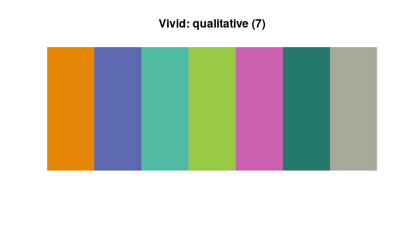
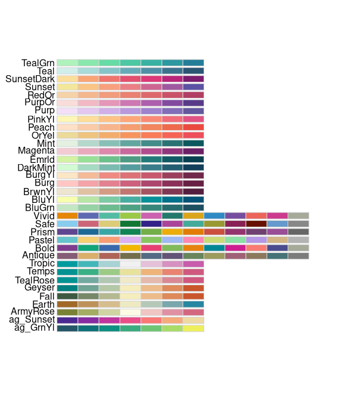
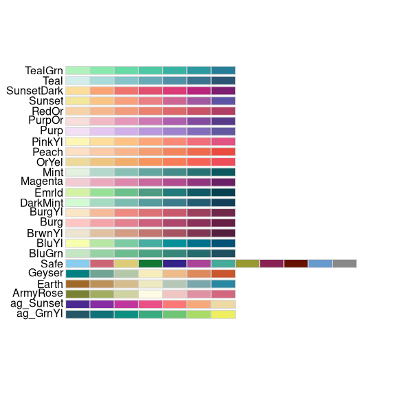
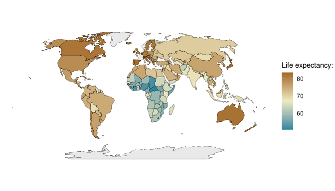
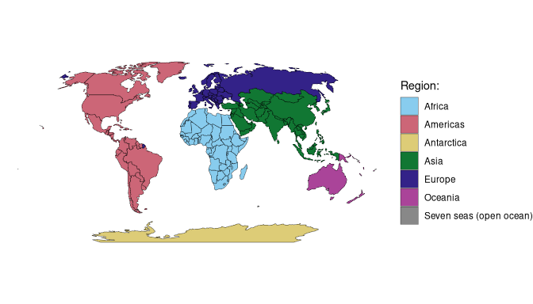

The goal of rcartocolor is to provide color schemes for maps and other graphics designed by CARTO as described at https://carto.com/carto-colors/.
Installation
Get the released version from CRAN:
install.packages("rcartocolor")Get the development version from github:
# install.packages("remotes")
remotes::install_github("Nowosad/rcartocolor")Examples
Display a CARTOcolor palette:
library(rcartocolor)
display_carto_pal(7, "Vivid")
Create a CARTOcolor palette:
my_colors = carto_pal(7, "Burg")
my_colors
#> [1] "#FFC6C4" "#F4A3A8" "#E38191" "#CC607D" "#AD466C" "#8B3058" "#672044"Browse all 34 palettes to compare swatches and available sizes by palette type.
Display all of the CARTOcolor palettes:

Only display colorblind friendly palettes:
display_carto_all(colorblind_friendly = TRUE)
ggplot2
The rcartocolor package contains four ggplot2 color scales: two for continuous data - scale_fill_carto_c, scale_color_carto_c and two for discrete data - scale_fill_carto_d, scale_color_carto_d:
library(sf)
<<<<<<< HEAD
#> Linking to GEOS 3.14.1, GDAL 3.12.4, PROJ 9.8.1; sf_use_s2() is TRUE
=======
#> Linking to GEOS 3.13.0, GDAL 3.10.3, PROJ 9.6.0; sf_use_s2() is TRUE
>>>>>>> refs/remotes/origin/master
library(spData)
library(ggplot2)
ggplot(world, aes(fill = lifeExp)) +
geom_sf(data = world) +
coord_sf(crs = "+proj=robin") +
scale_fill_carto_c(name = "Life expectancy: ",
type = "diverging", palette = "Earth", direction = -1) +
theme_void()
ggplot(world, aes(fill = region_un)) +
geom_sf(data = world) +
coord_sf(crs = "+proj=robin") +
scale_fill_carto_d(name = "Region: ", palette = "Safe") +
theme_void()